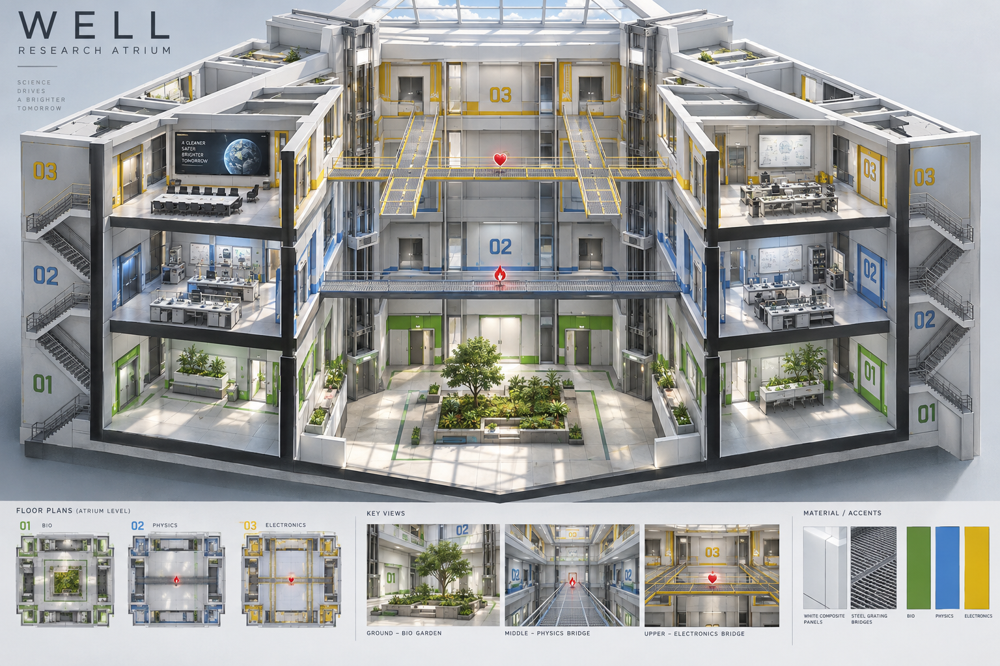
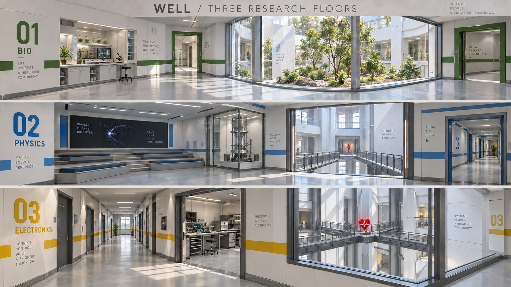

План этажей и предметов
Север всегда сверху. Схема фиксирует связи и зонирование, а не точные размеры стен. Пунктир показывает обход по периметру через комнаты и коридоры; проёмы и мебель предстоит проверить в игровом блокинге.
━━ голубой: непробиваемое стекло┄ оранжевый: открытое окноЛ: лифт · СТ: лестницаБ: броня · У: ускорение · ♥: лечение · D: уронД: дробовик · Р: ракетница · Э: резакS: защищённая область возрождения
Визуальное направление
Белые матовые панели, светло-серый нескользкий пол, графитовые оконные рамы, тонкие металлические мосты. Большой верхний фонарь даёт мягкий дневной свет. Цвет этажа — в полосах, номерах, подписях и обрамлении дверей, а не в цветном освещении всей комнаты.

Иллюстрация атмосферы. Точное направление мостов и размещение предметов задаёт схема выше.

Три характера помещений внутри единого светлого комплекса: биология, физика, электроника.
Ритм матча
Открытый центр
Второй этаж: прямой мост север–юг с уроном севернее середины. Третий: две продольные ветви Н и поперечина запад–восток с лечением в центре. Предметы не находятся строго один над другим. На мостах нет высоких укрытий; тонкие ограждения не должны превращать их в защищённые коридоры.
Сад — путь быстрого спуска и восстановления позиции. Два выхода на запад и восток первого этажа не дают превратить его в ловушку. Низкие клумбы дают небольшие укрытия; кроны не перекрывают стрельбу между этажами. Прыжки вниз — заявленные маршруты, безопасность приземления требует проверки текущей физики.
Защищённый периметр
На каждом этаже непрерывный обход через разные по масштабу помещения. Прострелы прерываются поворотами и стенами. Окна со стеклом позволяют наблюдать; соседние открытые секции требуют выйти из защищённой позиции для выстрела.
Предлагается 8 областей возрождения: 3 снизу, 2 в середине, 3 сверху. Это запас мест для 4–8 участников; целевое число игроков ещё не согласовано. Спавны за непрозрачными стенами, вне обзора из атриума и лестниц, без бонуса прямо у ног. Стартовая винтовка остаётся у каждого.
Лифты: предложенный контракт, ожидает уточнения
Северный начинает на третьем этаже, южный — на первом. Задержка после посадки — ровно 1 секунда. Предлагаемый вариант: снизу едет вверх, сверху вниз; в промежуточном положении сохраняет направление. Остановка после схода последнего живого пассажира — на текущей высоте, без доводки до этажа и без автоматического возврата. На крайнем этаже останавливается; следующий рейс начинается после освобождения и новой посадки.
В исходной формулировке явно указан рейс вниз. Направление после посадки внизу/в середине и поведение с несколькими пассажирами пока являются предложением, не согласованным правилом.
Шахта открыта со стороны колодца; площадка и направляющие хорошо видны. Проход на мост расположен рядом, а не через платформу. Выход второго этажа широкий, с видимым порогом и площадкой для прыжка. Если пустой лифт брошен между этажами и до него нельзя добраться, остаются две лестницы; автоматический вызов здесь не подразумевается.
Для ботов: оценить доступность посадки → войти целиком → дождаться старта → ехать на движущейся опоре → выйти на выбранном этаже. Бот сравнивает время и риск с лестницей, не ждёт недоступную платформу бесконечно и не получает телепортаций. Если другой пассажир остаётся, лифт продолжает движение.
Архитектура реализации
| Слой | Предложение |
|---|
| Карта | Новая authored-карта со своей неизменяемой ревизией. Отдельные support ID для этажей, мостов, лестниц, сада и платформ. Реальные стены, оконные проёмы, мебель-укрытия и точки предметов описываются в общей геометрии. |
| Лифты | Определение платформы и остановок отдельно от состояния матча. Simulation хранит высоту, направление, пассажиров и таймер; motor переносит пассажиров через collision resolution. Pause, Repeat, snapshot/restore сохраняют или сбрасывают это состояние по общим правилам матча. |
| Навигация | Статические связи лестниц и односторонние спуски; динамическая доступность лифтов. Цель на другом этаже нельзя считать достигнутой по совпадению XZ. Посадка и выход — отдельные действия навигации. |
| Стекло и решётки | Стекло видно и оно блокирует попадания; бот отличает видимость от возможности выстрела. Открытое окно — настоящий проём. В текущем Combat Bowl ракеты взрываются о полный настил решётки; другие лучи проходят через опорный слой. Для новой решётки нужно явно выбрать общий контракт: видимые металлические элементы должны соответствовать коллизиям. |
| Оформление | Цвета, панели, надписи, мелкие приборы не добавляют скрытых препятствий. Крупная мебель с коллизией входит в геометрию и навигацию; мелочь стоит на столах и в нишах. |
| Настройка | Рабочий масштаб для первого блокинга: корпус около 48×48 м, колодец 24×24 м, отметки 0 / 5 / 10 м, проходы около 3 м, мосты 2.5–3 м. Это предложения, не утверждённые значения. Принятые игровые числа — в именованном профиле Balance Lab; опубликованная геометрия версионируется. |
В текущем коде уже есть authored-карты, лестничные переходы, армированное стекло, оконные проёмы и все перечисленные предметы. Движущиеся платформы и планирование поездки потребуют отдельного расширения. Схема не является реализацией или подтверждением работоспособности.
Мебель без помех движению
Высокие шкафы, холодильники, серверные стойки — вдоль наружной стены или в нишах. Столы группируются в один понятный остров с двумя обходами. Стулья встроены или задвинуты; никаких отдельных мелких коллайдеров на маршруте. Перед окнами, выходами на мосты, лестницами и лифтами остаются свободные площадки. Закрытые кабинеты в первом варианте — статичные двери и видимые интерьеры, без новой механики открывания.
Что проверить следующим срезом
Сначала согласовать план и лифты; затем отдельно разрешённый игровой блокинг проверит реальные времена обхода, обзор двух центральных бонусов, стрельбу через окна и решётки, выход из сада, встречное движение на лестницах и выход с лифта на втором этаже. После этого — детализация помещений и свет. Unity, тесты и сборки в этом обсуждении не запускались.